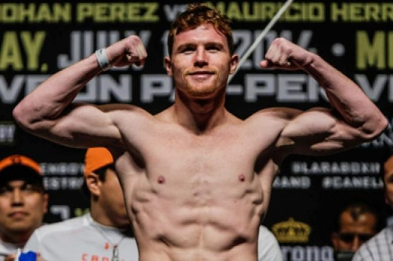

Aquí una lista de los boxeadores con mejor racha y estilo del boxeo mundial según nuestra opinión.
- Saúl Álvarez, Mejor conocido como "Canelo" consta con 55 peleas totales, 52 Ganadas (35 K.O, 17 Decisión) y 1 Derrota, teniendo un estilo Ortodoxo.
